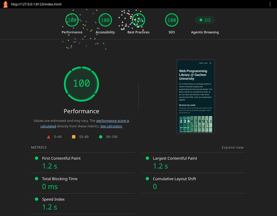

Week 9_2 — Performance Audit
Week 9_2 is about fast sites — 53% of mobile users leave after 3 seconds. The deliverable is a Google Lighthouse performance audit of my library homepage (compress images, lazy load, defer scripts, cache assets): screenshot the score before, apply the optimizations, then screenshot the score after — that’s what gets submitted.
Homework — Performance audit
From the Performance slides’ Summary & Homework: optimize your personal site and post the result to your page.
Performance slides — Summary & Homework
- Run Lighthouse (Performance only) and screenshot your Performance score.
- Apply at least 3 optimizations from the lecture.
- Re-run Lighthouse and screenshot the new score.
- Post both screenshots with a 2-sentence description of what changed.


What the run measured. FCP 1.20 s, LCP 1.20 s, TBT 0 ms, CLS 0, Speed Index 1.20 s. The page is 4 requests / 66 KB of hand-written HTML, CSS and JS, with no images and no third-party origins — there is very little left for a performance budget to bite on.
What the report still flags, and why.
cache-insight—python3 -m http.serversends noCache-Controlheader. GitHub Pages serves the same files withmax-age=600, so this is a property of the host, not of the markup.render-blocking-insight— the two stylesheets andjs/main.jssit in<head>.main.jshas to stay parser-blocking: it applies the saved theme before the first paint, and deferring it is what produces a white flash in dark mode.forced-reflow-insight— 51.7 ms injs/main.js, attributed to the back-to-top check:update()togglesis-visibleand then readsgetBoundingClientRect()on the next scroll frame, so the browser lays out twice. It is the only audit that differs between the two runs — it did not appear in the first one.
How to run the audit
- Open Chrome DevTools (F12).
- Click the “Lighthouse” tab.
- Check “Performance” only.
- Click “Analyze page load”.
- Read the score (0–100) and expand each failed audit.
- Click “Learn more” on failures, fix them, and re-run to verify.